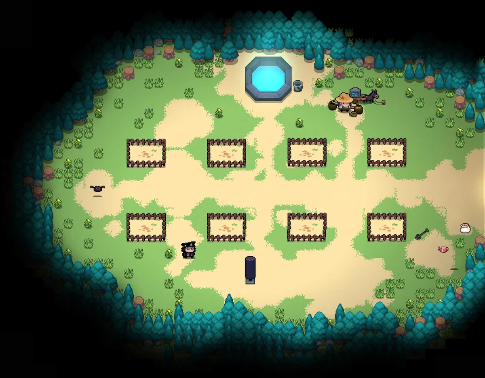

Сад — это специальная зона отдыха и подготовки в лобби игры. Здесь игроки могут выращивать различные растения из семян, которые они находят во время зачистки подземелий. Каждое растение уникально: одни дают ценные ресурсы (железо, древесину, самоцветы), другие — мощное оружие, а самые редкие даруют постоянные баффы-иммунитеты на весь следующий забег.
Найти Сад очень просто. Находясь в главном зале выбора персонажей (возле рыцаря и паладина), начните двигаться в самую левую сторону экрана. Пройдите мимо Мастерской, где куются оружия, обойдите Торговца с его товарами и выходите в большую деревянную дверь. За ней и располагается просторная открытая лужайка вашего Сада.
Изначально каждому искателю приключений доступно всего 2 грядки. Чтобы открыть остальные 6 мест под посадку, вам придется потрудиться: третья и четвертая грядка покупаются за самоцветы прямо на месте, пятая грядка откроется после победы над боссом Дурман, а для открытия последних грядок нужно пройти игру в сложном режиме BADA (Злая сборка) и выполнить особые скрытые достижения.
В вашем распоряжении на грядках всегда есть Садовая Лейка, которая берётся из бочки с бесконечной водой. Полив обязателен для роста любого семени каждый день, иначе оно засохнет и перестанет развиваться. Также в игре есть Удобрения — они создаются в мастерской или выбиваются из монстров, позволяя моментально ускорить рост любого растения на один день.
Главная тактика профессиональных игроков Soul Knight — грамотное планирование грядок перед сложными забегами. Всегда сажайте многолетние растения (Мандрагору, Кактус, Драконий фрукт) на постоянной основе. Если поливать их каждый день, то перед каждым спуском в подземелье вы будете бесплатно забирать иммунитеты к огню, яду и ловушкам!